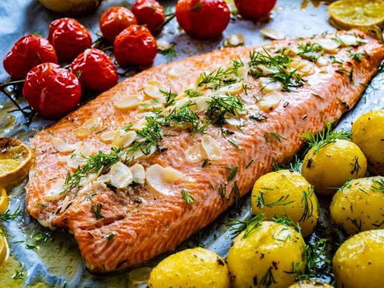
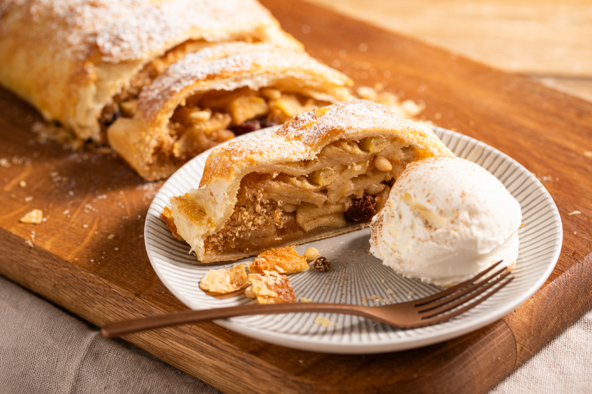

- Truta

Pelo clima de montanha e águas cristalinas, é o peixe mais tradicional da região.
Onde comer: O Arco Íris (nos arredores dos Três Picos) e o Viva Rô (em Mury) são excelentes para provar filés de truta grelhados.
- Culinária Alemã e Suíça

Herdada dos colonizadores, destaca-se pelo clima frio.
Onde comer: O Bürgermeister Restaurante no Cônego é famoso pelo Eisbein (joelho de porco), croquetes e fondue
- Massas e Pizzas

Massas artesanais são o forte de uma das colônias italianas da cidade.
Onde comer: A tradicional La Bamba, com 45 anos de história, é referência em massas. O Spaghetti - Cozinha Italiana é super bem avaliado na região de São Pedro da Serra.
- Doces da Ponte da Saudade

O bairro é famoso nacionalmente pela produção de quitutes.
Destaque: Não deixe de provar o clássico doce casadinho (queijo com goiabada), além de strudels e doces de leite.